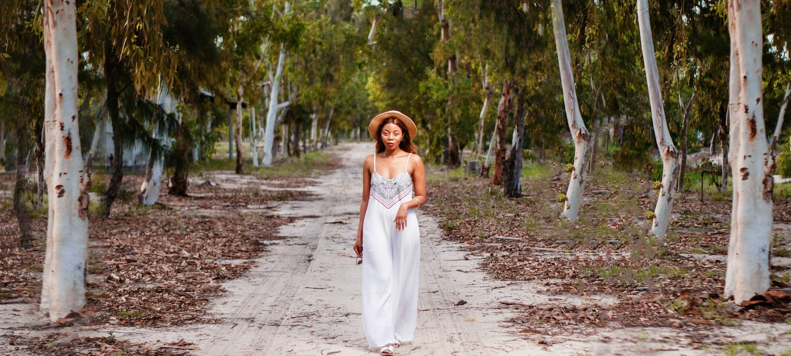

Quelles sont les meilleures marques de mode femme premium françaises ?
Neuf maisons parisiennes comparées sur leur pièce signature, leurs matières, la fourchette de prix de leurs robes et leurs services.

Robes, maille, blouses en soie, manteaux. Nous lisons les compositions, nous comparons les coupes et les prix sur les sites officiels, puis nous classons les maisons.

Neuf maisons parisiennes comparées sur leur pièce signature, leurs matières, la fourchette de prix de leurs robes et leurs services.


Neuf maisons parisiennes comparées sur leur pièce signature, leurs matières, la fourchette de prix de leurs robes et leurs services.
Neuf robes, une par maison, comparées sur la matière, la coupe, la polyvalence, le prix et les services.
Sept maisons de lingerie française comparées sur leur soutien-gorge phare, de 49 à 118 €.
Trente pièces, sept familles, quatre couleurs de base.
Dix marques, dix cabas phares, cinq critères pondérés et affichés avant le classement.

Huit maisons françaises, une idée cadeau phare par maison et une trentaine de pièces relevées entre 75 et 450 €.
Note globale sur 10 sur le seul univers prêt-à-porter, mise à jour le 16 octobre 2026. Matières et coupe pèsent 50 % de la note. Notes et prix, relevé de démonstration.
Voir la méthode de notation


Comparez deux maisons de prêt-à-porter sur nos cinq critères en un clic.
Sur nos relevés d'octobre 2026, Vanessa Bruno arrive en tête du prêt-à-porter (8,4/10) pour ses matières, soie, crêpe, laine mérinos, et son style. Sézane suit à 8,0/10 sur le rapport style-prix, Sandro à 7,8/10.
Entre 225 et 500 € chez les maisons premium françaises en 2026. Une robe en soie dépasse en général 400 €, une robe en maille se trouve autour de 250 à 350 €.
Regardez la composition (soie, viscose, laine plutôt que polyester majoritaire), la doublure, les coutures intérieures et la présence d'un ourlet assez large pour être repris.
Sézane et ba&sh taillent plutôt amples, Sandro et Maje plus ajustés. Les grilles officielles des marques restent la meilleure référence.
Cinq critères sur 10, matières, coupe, style, prix et service, pondérés dans une note globale. Relevé de démonstration d'octobre 2026, prix des sites officiels.
Un email le vendredi, le classement de la semaine, les nouveaux comparatifs et les pièces qui reviennent en stock.
Un email par semaine, désinscription en un clic.